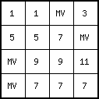
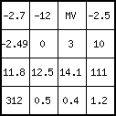
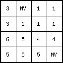
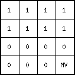
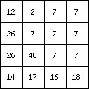
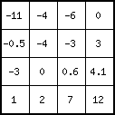
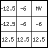
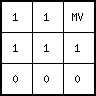
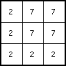

Name
lookup — Compares cell value(s) of one or more expression(s) with the search key in a table
Synopsis
pcrcalc [option]Result= lookupboolean(table,expression1,expression2,...expressionn)
pcrcalc [option]Result= lookupnominal(table,expression1,expression2,...expressionn)
pcrcalc [option]Result= lookupordinal(table,expression1,expression2,...expressionn)
pcrcalc [option]Result= lookupscalar(table,expression1,expression2,...expressionn)
pcrcalc [option]Result= lookupdirectional(table,expression1,expression2,...expressionn)
pcrcalc [option]Result= lookupldd(table,expression1,expression2,...expressionn)
table | ascii text table |
expression1-n | boolean, nominal, ordinal, scalar, directional, ldd |
| spatial | |
Result | type is specified by the sort of command: lookupboolean results in
a boolean Result, lookupnominal results in a nominal Result etc. |
spatial; non spatial if all expressions 1-n are non spatial |
Options
--columntable or --matrixtable
- --columntable
a column table is read always (default)
- --matrixtable
if two expressions
expression1,expression2,...expressionn are specified in the command line a matrix table is read instead of a column table.
--degrees or --radians
- --degrees
directional values in
tableare interpreted as degrees (default)- --radians
directional values in
tableare interpreted as radians
cell representation for lookupnominal and lookupordinal
- --small
cell representation is small integer cell representation (default)
- --large
cell representation is large integer cell representation
Operation
operation with a column table (with global option --columntable):
In the table relations between the values of expression1,
expression2,...expressionn are given. For each combination of
values of expression1, expression2,...expressionn a new
value can be specified.
If the option --columntable is set, a column table is always used
for table. The column table consists of a number
of n +1 columns. The first n columns are key columns, where
n is the number of the one or more expressions expression1,
expression2,...expressionn. The key columns consist of key fields;
each key field is one value or a ranges of values. The key fields in the first
column will be linked to cell values on expression1, the key fields in
the second column to values on expression2, and so on, where the key
fields in the nth column will be linked to values on expressionn.
The last column (column number n+1) contains so called value fields;
these are values which will be assigned to Result. Each row in the
table is called a tuple. Of course, it consists of n key fields and one
value field. An example of a column table is given in the Table below.
Example 8. Example of a column table. The first, second and third column give the values of expression1, expression2 and expression3 respectively; the fourth column contains the value fields.
<2,> 3 <,12> 1
<,2] 3 <,12> 3
<2,> 14 <,12> 7
<,2] 14 <,12> 9
<2,> 14 8 4
<,2] 14 8 8
For each cell, the lookup operator reads the values in that cell on
expression1,expression2,...expressionn and looks for a tuple
whose key fields match these cell values, starting at the first row of the
table. So, in a tuple the ith key field (where i is 1 to n) is
compared with the value on expressioni. It matches if the cell value on
expressioni is equal to the value in the key field or if it is in the range
of the key field, in case of a key field consisting of a range of values. If
all key fields in a tuple match the cell values of the expressions belonging
to them, the value in the value field of the tuple is sent to the
corresponding cell on Result.
The table is an ordinary ascii text file which can be made using any
text editor program you wish. Alternatively you can make it with a spread
sheet program or word processing program and export table as an ascii
text file. You can have a squint at your table by typing the DOS command
type followed by a space and the table name table.
The precise format of the table is as follows. In a row (tuple), the
number of key fields must equal the number of expressions
expression1,expression2,...expressionn. The key fields are
followed by one value field. The fields must be separated by one or more
spaces or tabs. The number of spaces or tabs doesn't matter. A value field
is one single value. A key field is a single value, or a range of values,
where a range of values is typed as: '[' or '<' symbol, minimum value,
comma, maximum value, ']' or '>' symbol. The minimum and maximum
values are included in the range if square brackets (respectively '[' and ']')
are used, they are not included if '<' or '>' are used. Omitting a value
in the range definition means infinity. Ranges can be used for nominal,
ordinal, scalar and directional data types. Values in keys are typed as an
ordinary number (for instance 24.453) or using 10 exponentials (for
instance 32.45e3 means 32450). Examples of tuples are:
[,0.05> 1
Assign a 1 to all expression cell values smaller than 0.05
[-2e3,0> 2
Assign a 2 to all expression cell values equal to -200 or between -200 and 0.
[-1.42,-0.2> [,9> -2.2
Assign a -2.2 to all cells with: expression1 cell value equal to -1.42 or between
-1.42 and -0.2 and expression2 cell value smaller than 9.
In one table as many tuples as needed can be specified. Remember that
for each cell the value field is assigned of the first tuple (from top to
bottom) that matches the set of expression1,
expression2,...expressionn values on the cell.
operation with a matrix table (with global option --matrixtable):
If two expressions expression1, expression2,...expressionn are
specified in the command line, table will be interpreted as a matrix
table instead of a column table. If a different
number of expressions expression1, expression2,...expressionn
is specified table will be read as a column table and the operation is
performed as described above.
If a matrix table is read, the table must have the following
make-up; Table 2 gives an example.
The first field in the top left corner of the matrix, is not
considered during operation but is necessary to align the matrix; it is a
dummy field and may have any value. The first row consists of this
dummy field and the key fields which will be linked to expression1.
The first column consists of the dummy field and the key fields which will
be linked to expression2. The key fields may be a single value or
may be a range, where ranges are specified in the same way as it is done in a
column table (see above). The remaining fields in the matrix are value
fields and consist of the values which will be assigned to Result. In
horizontal direction, fields must be separated by one or more spaces or
tabs. All fields must be filled in.
Example 9. Example of a matrix table. The fields in the first row contain values of expression1; the fields in the first column contain values of expression. The field in the top left corner is a dummy field. The remaining fields are value fields.
-99 1 2 3 4
12 6.5 6.5 6 6
14 -4 -4 -4 -4
16 -13 -13 -12 -12
}}
For each cell, the operator reads the expression1 value and the
expression2 value. It searches in the matrix both the column with a key
field value which matches the expression1 value and the row
with a key field value which matches the expression2 value.
The value field which is in this column and row is assigned to the
corresponding cell on Result. If more than one combination of column
key field and row key field match the cell values of expression1 and
expression2, the value field is chosen which is firstly in the most left
column and secondly in the most upper row.
Notes
If a cell has expression1 and/or expression2 and/or...expressionn
values that don't match with a key field in the table, a missing value
is assigned to the cell on Result.
A cell with a missing value on an expression expression1,
expression2,...expressionn is assigned a missing value on Result.
Each value in the key fields must be in the domain of the (sub) data type
of the expression to which it will be linked, else the operation will give an error.
Also, the value fields must be in the domain of the data type of the Result map
(specified by the type of command: lookupboolean,
lookupnominal,.. etc.).
Using lookupldd for generating a Result of data type ldd is quite
risky: probably it will result in a ldd which is unsound. If you
do want to create a Result of data type ldd use the operator
lddrepair afterwards. This operator will modify the ldd in such a way
that it will be sound, see the operator lddrepair.
Examples
pcrcalc Result1.map = lookupnominal(Table.txt,Expr1.map)
Result1.mapTable.txt[, -2.5> 1 -2.5 3 <-2.5, 0] 5 <0, 10> 7 [12.5, 17.75] 9 <17.75, 250> 11 <0, 1> 13Expr1.mappcrcalc Result2.map = lookupordinal(Table2.txt,Expr12.map,Expr22.map,Expr32.map)
Result2.mapTable2.txt1 7 <,> 1 1 <7,> [0,> 2 1 <7,> <,0> 3 0 7 <,> 4 0 <7,> [0,> 5 0 <7,> <,0> 6Expr12.mapExpr22.mapExpr32.mappcrcalc --matrixtable Result3.map = lookupordinal(Table2.txt,1,100,Expr32.map)
Result3.map
Table2.txt1 7 <,> 1 1 <7,> [0,> 2 1 <7,> <,0> 3 0 7 <,> 4 0 <7,> [0,> 5 0 <7,> <,0> 6Expr32.mappcrcalc --matrixtable Result4.map = lookupscalar(Table3.txt,Expr13.map,Expr23.map)
Result4.mapTable3.txt-9 0 1 2 12.5 -12.5 7 13.5 -6 9 14 -2Expr13.mapExpr23.map